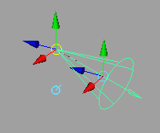
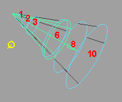
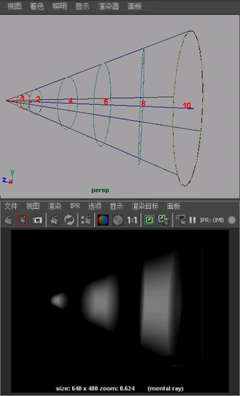

可以使用衰退区域操纵器在聚光灯上以交互方式设定衰退区域。（或者，可以在“属性编辑器”(Attribute Editor)中输入精确距离位置。请参见衰退区域属性。）
衰退区域指示在三个截断圆锥体形状中需要照明的区域和不需要照明的区域。使用衰退区域操纵器来精确指示这些区域。
提示：
与聚光灯进行交互以获得距离尺寸的精确照明时，请调整场景视图，以使其垂直于聚光灯图标，从而使得更容易在正面看到距离效果。
以交互方式设定衰退区域
- 确保启用“使用衰退区域”(Use Decay Regions)属性。
若要启用衰退区域操纵器，请参见显示、隐藏灯光操纵器或调整其大小。

- 单击“索引操纵器”(Index Manipulator)，直到可以看到聚光灯的图标上的衰退区域为止。（若要了解有关“索引操纵器”(Index Manipulator)的详细信息，请参见显示、隐藏灯光操纵器或调整其大小。）

- 拖动衰退区域环形可设定开始距离和结束距离。如果需要，可以在“属性编辑器”(Attribute Editor)中验证和精细调整这些值。
提示：
以交互方式设定灯光的衰退区域时：
- 保持“属性编辑器”(Attribute Editor)打开，并使 IPR 渲染场景，以便能够以交互方式进行更改，从而获得所需的外观。
- 应用“灯光雾”(Light Fog)（在聚光灯的“属性编辑器”(Attribute Editor)的“灯光效果”(Light Effects)区域中，单击“灯光雾”(Light Fog)旁边的框）以查看结果。
